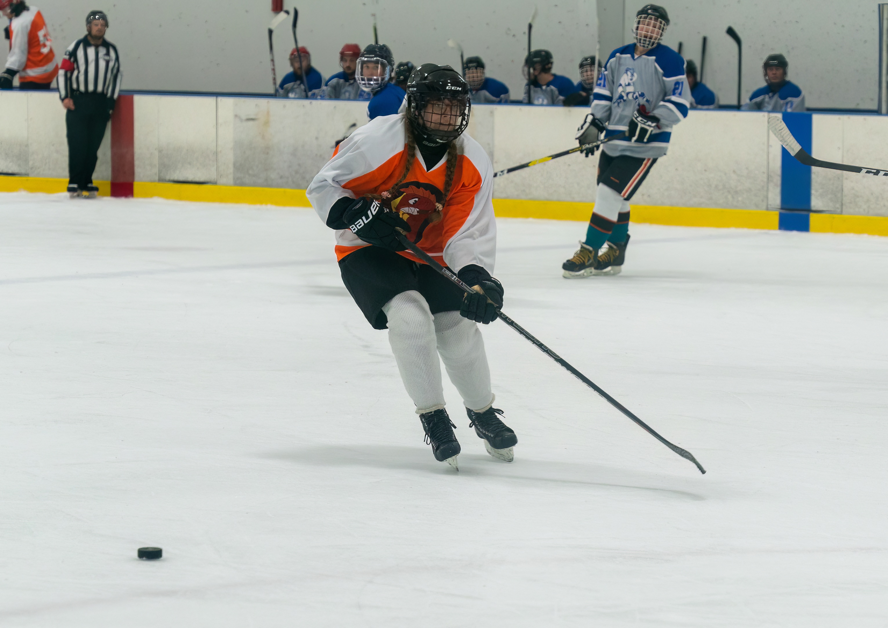
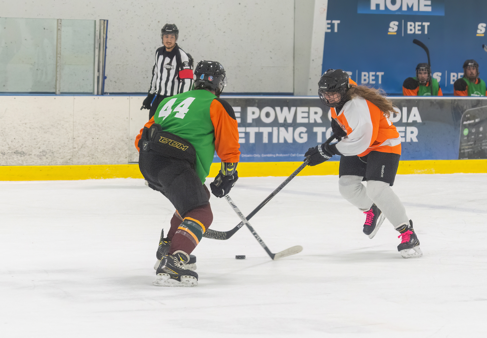
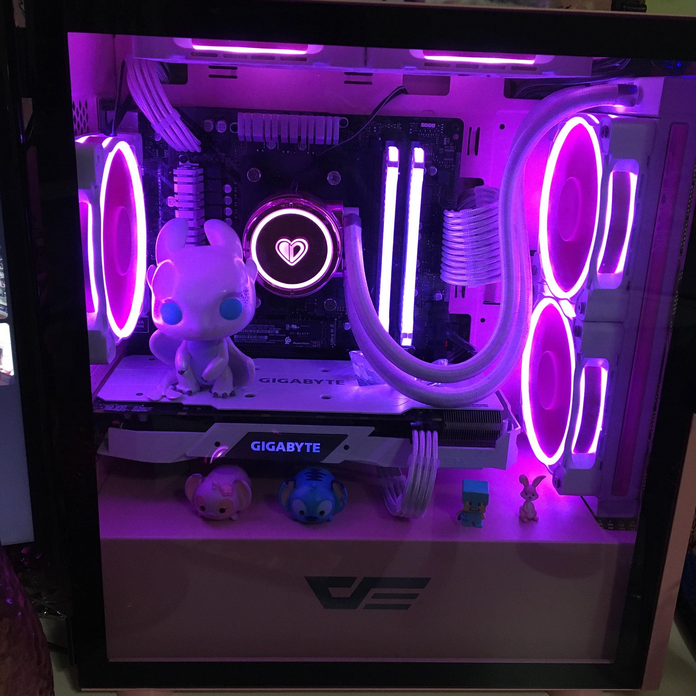
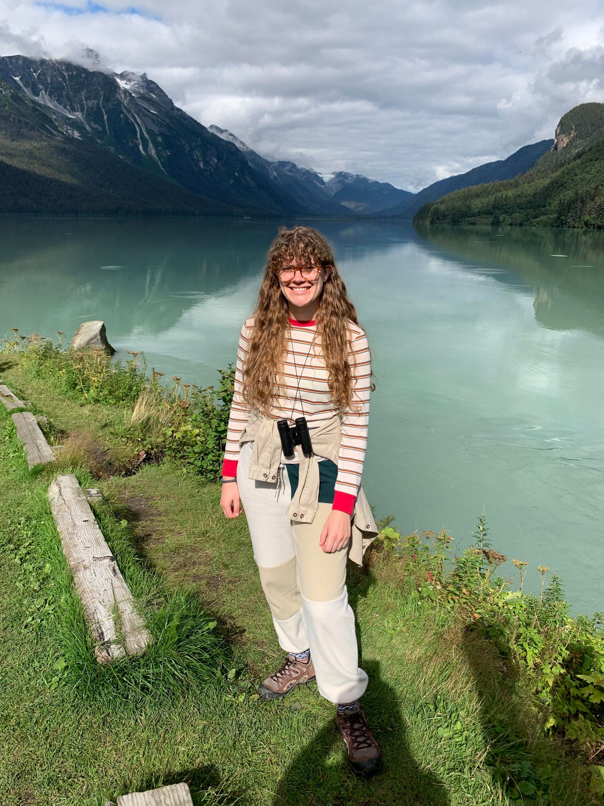
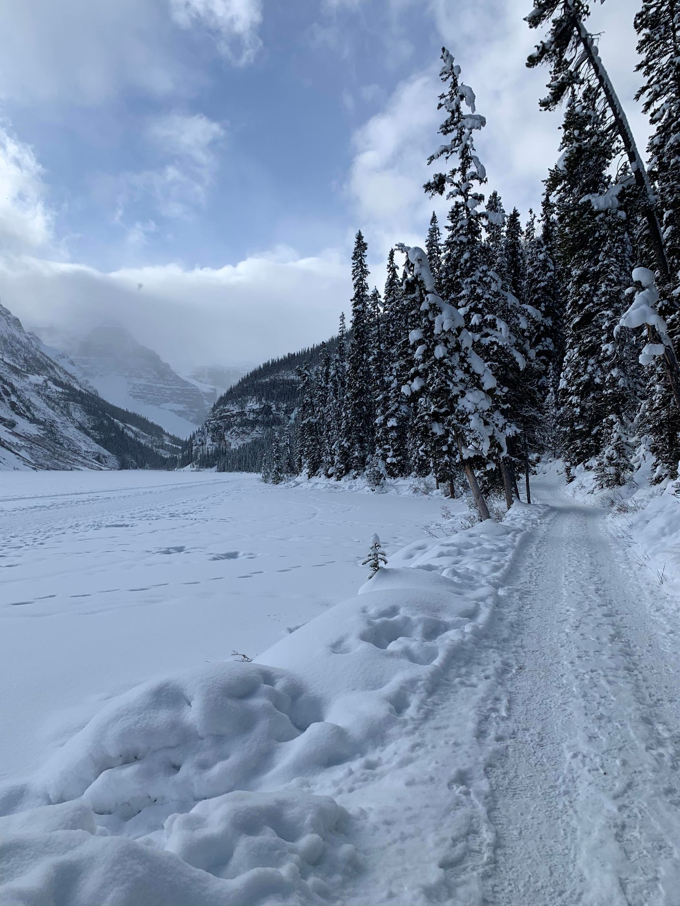
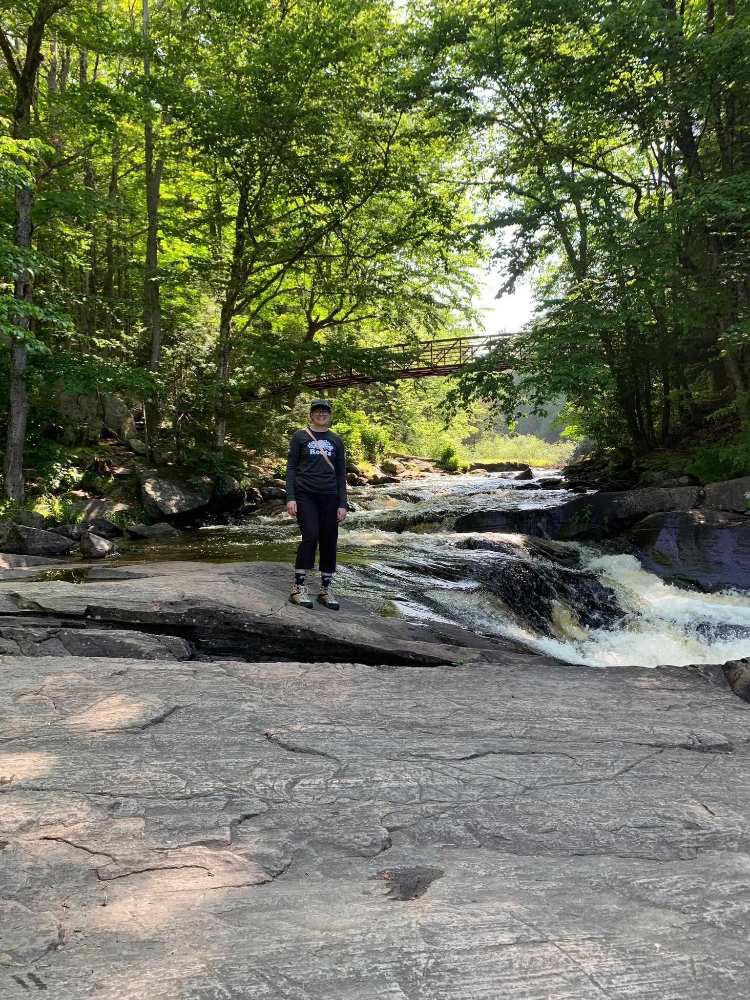

I have picked up a range of hobbies over the years, here are a few of my most notable ones:
I have been a hockey play for about 15 years of my life, and I intend to continue playing for as long as I can.
I have mostly participated in women's leagues but have recently also tried playing on co-ed teams.
Here are some pictures of me in action!
 
I grew up playing video games with my little brother on Xbox 360.
Fast forward to now, I've built my very own gaming PC and I continue to enjoy some of the same games I grew up with.
I mostly enjoy story rich games with role playing aspects as well as survival games. I also have a soft spot for cozy games I can play through for a bit of relaxation.
Some of the games I have been enjoying lately are:
I have been camping with my family for as long as I remember, visiting several different Ontario Parks over the years.
  I usually like to go hiking, paddling, or camping. Eventually I would like to be able to make more challenging trips.
Some of my bucket list hikes and trips include:
Description